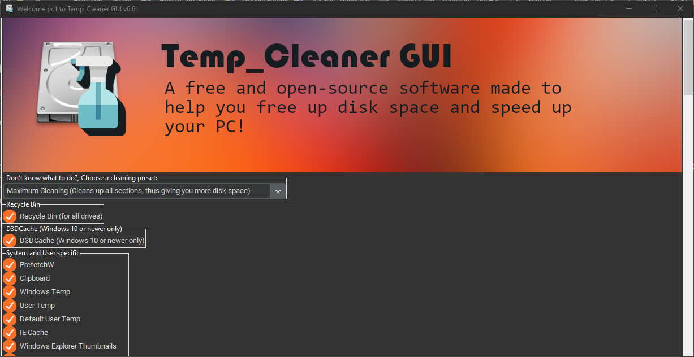

How to properly use the Maximum cleaning preset
Temp_Cleaner GUI gives you a powerful cleaning preset (called the maximum cleaning preset), what makes this cleaning preset powerful is not it's name, what really makes it that powerful is the way it works, it checks (enables) all available cleaning options, thus guranteeing you to free up the maximum disk space you could free up on your PC.
For best results, it is strongly recommended that you run this cleaning preset after you install Temp_Cleaner GUI for the first time immediately, so you can see how powerful Temp_Cleaner GUI is.
How to use Temp_Cleaner GUI's maximum cleaning preset?
-
First of all, Please make sure to save all your unsaved work and close everything you have opened on your PC (your web browser that you always keep minimized, your word processor, everything else, including apps on your system tray) to ensure that you get the best results. (This is important)
-
Take a backup of your start menu layout (because the option "Clean Windows OS Cached Files" will probably delete your start menu layout) (This is important)
-
Launch Temp_Cleaner GUI
-
Choose the cleaning preset: Maximum cleaning

If you don't know how to choose a cleaning preset, Go to Understanding the user interface of Temp_Cleaner GUI
-
Start the cleaning process by Clicking on the Start cleaning button
If you don't know how to start the cleaning process, Go to Understanding the user interface of Temp_Cleaner GUI
-
Follow on-screen instructions until the cleaning process is complete, You will see many dialog boxes asking you a lot of questions and showing you a lot of information, you will also hint many command prompt windows spawning on your screen, don't worry, this is a part of that cleaning preset.
-
When the cleaning process finishes, Close the Temp_Cleaner GUI's window and restart your computer. (This is important)
-
Your PC will take longer than usual to boot up, this is normal, because we've deleted all caches that Windows used to speed up the booting up process, and you may also hint that some of your start menu items or folders are gone, this is normal too, this is because Windows haven't created it's caches yet, to fix all that, we will need to restart our PC again. (This is important)
-
After restarting your PC again, you will notice that it is booting up normally, and all start menu items and folders are now back, now the Windows OS has built it's clean cache files and Windows should now be faster and cleaner than before.
If you have followed this guide properly and carefully and got another result, I would be happy if you contact me describing the issue you are facing and I will try my best to help you fixing it.
Support Twitter
Discord Support Server (Usually located in the Why Temp_Cleaner GUI section)
This document is provided to you by Insertx2k Dev aka. Ziad Ahmed (Mr.X)